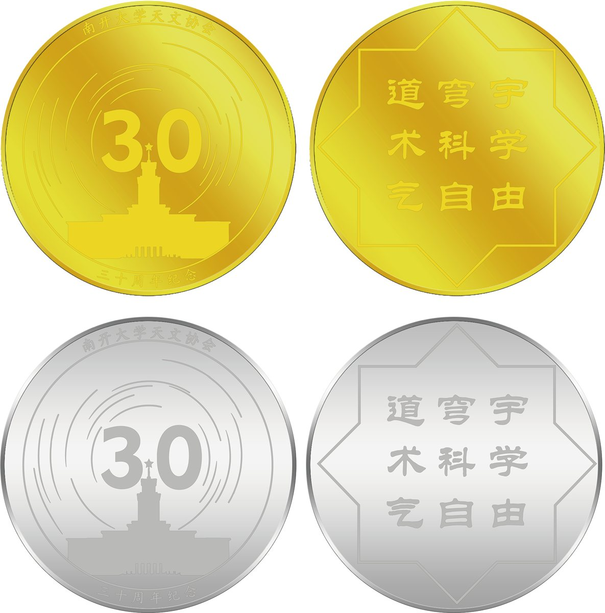
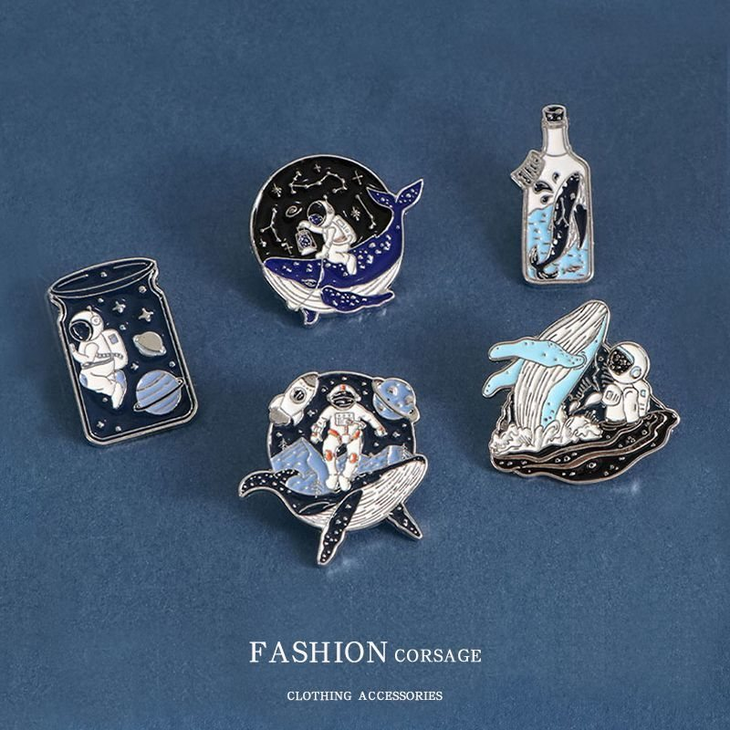
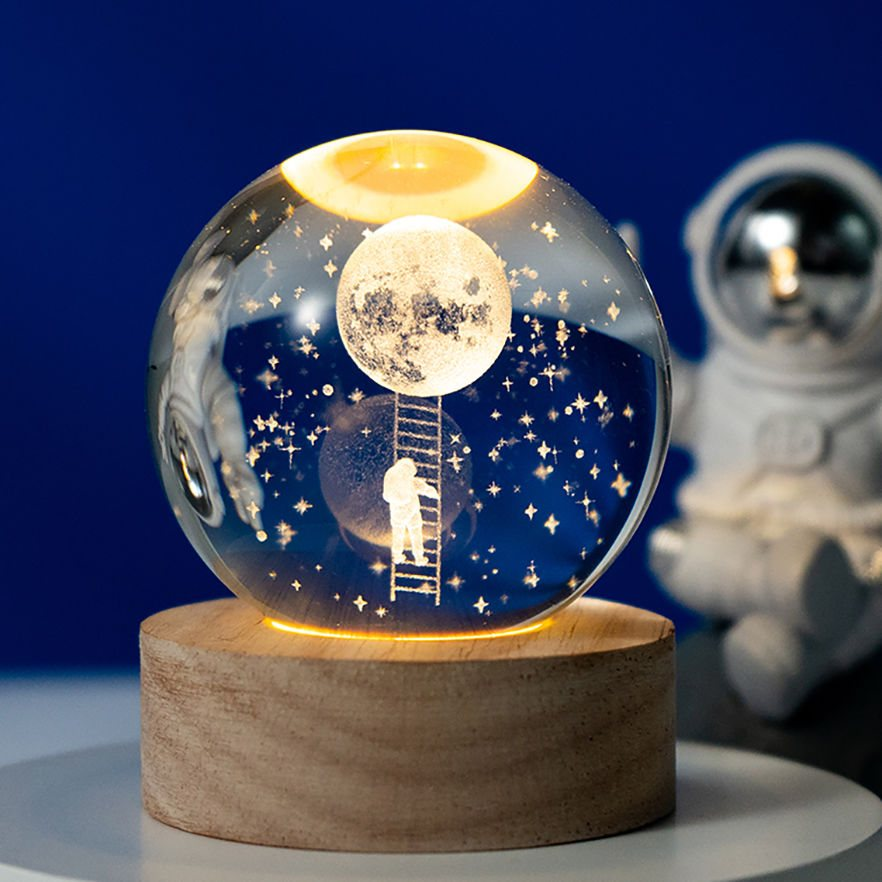
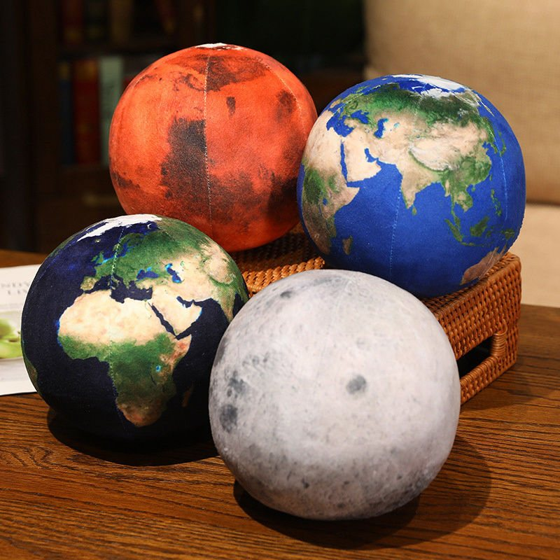
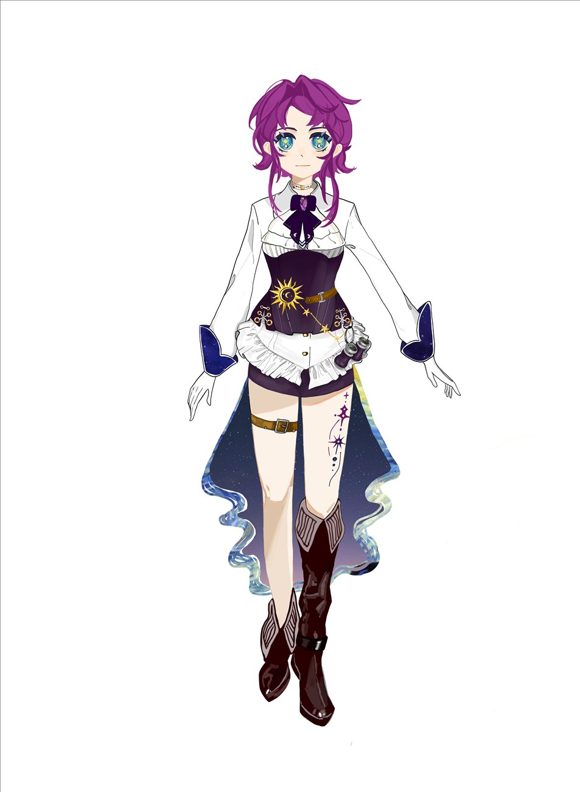

天津市大学生天文节
查看详情→天津各高校天文社团轮流承办，协会是承办方之一。2025 年承办了天文知识竞赛。
每年 11 月至 12 月三十年，很多个晚上就这样交给了头顶那片天。
学术型社团，下设活动部、宣传部、科普部。2026 年注册会员 548 人。
社团宗旨道穹宇 · 树科学 · 气自由
1996 年，苏宜教授在南开园里办起了这个社团。三十年间换过很多届人，中间也经历过冷清的时候， 有过一年到头办不了几场活动的年份。后来一届一届接上来，又重新热闹了：2025 年办了 25 场， 平均每两周一次。
天津市大学生天文节从 1999 年办到现在，协会是承办方之一。2025 年承办了天文知识竞赛， 拿了知识竞赛一等奖和优秀社团奖；也和国家天文台兴隆观测站保持着每学期一次的研学。 公用望远镜分布在八里台和津南两个校区，会员可以免费借用，不会用有人教。
有人在新开湖边第一次看清月球的环形山；
有人在宿舍楼下守着，等一颗流星划过整片天；
有人在兴隆的山顶上裹着睡袋等到凌晨；
也有人只是路过，抬头看了一眼，就留了下来。 这些夜晚没有名字，一年一年，攒成了三十年。
2026 年 7 月，一颗编号 21272 的小行星有了名字。
（21272）Suyi，中文名「苏宜星」。1996 年 9 月 18 日由兴隆观测站发现，2026 年 7 月由国际天文学联合会小天体命名工作组正式命名。
苏宜教授在南开讲授天文通识课几十年。1996 年，也正是他指导创立了这个社团。
于是这件事对我们有点特别：协会的第三十年，当年在讲台上带大家认星的人，名字被写进了星表。以后再说起「苏宜星」，它不只是新闻里的一行字。
日心黄道坐标 / J2000
拖动旋转 · 按钮缩放
日心黄道坐标 / AU —
轨道数据来自 JPL SBDB（轨道解 #39）与 Horizons 日心状态矢量；紫线为历元瞬时轨道，不是完整摄动轨迹。
星体尺寸与光晕为可视化放大。不用于正式观测指向。
有些夜晚，值得专门出门一趟。
天津各高校天文社团轮流承办，协会是承办方之一。2025 年承办了天文知识竞赛。
每年 11 月至 12 月在新开湖边和教学楼前架望远镜，路过就能看，不用报名。
晴天周末英仙、双子、狮子、猎户、天琴。包车、保险和应急预案都有，每年两三百人次。
每年 5 场国家天文台兴隆观测站。看专业望远镜怎么工作，也听站里的老师讲研究。
每学期 1 次请天文领域的研究者和协会里的同学来讲，题目从恒星演化到天文摄影后期。苏宜教授编的《天文学新概论》是入门书。
每学期数场去中小学上课，也参加天津市科技馆的科普月和社区观测。
不定期出门前先看一眼天，已经成了习惯。
协会自己做的一些周边。
把看过的星空，做成能带在身上的形状。
纪念章、徽章、帆布袋、文化衫、卡套和明信片。图案都是会员自己拍的照片和设计的： 主楼剪影、月面，还有社团形象 Ankaa。后面还会陆续做新的。
部分实物是招新奖品，文创随活动限量发放。





Ankaa 是凤凰座 α 星的名字。2026 年开始作为协会的虚拟形象， 出现在公众号和小红书的插图里，也印在了这一批文创上。
她替我们先去看了一眼那些很远的星星。
协会的望远镜对会员免费开放，不会用有人教。
第一次抬头，就算开始了。
每年九月招新，其他时间也欢迎来参加活动，没有门槛。
活动预告都在这里发，小红书和 B 站更新作品和记录。
九月招新季填表入会，参加迎新会认识同好。
人到就行，器材和讲解由协会提供。
协会成员自己拍的天体照片。点开可以看拍摄时间、地点和活动，方向键翻页。这些光走了很远很远，才抵达你的眼睛。
观测、比赛、招新、上课的现场。点开同样有时间和地点。同一片天，不同的人在不同的地方抬头。
五个方向，三十五个站。点一个方向，下面就换成那一组。看得越远，越清楚自己站在哪里。
合作、投稿、捐设备，都可以找我们。
公众号后台留言，或者在小红书、B 站私信，都会有人看。
中小学和社区想办观测或讲座也可以联系。今年我们去了南大附中上课，也在天津市科技馆做过志愿服务。
天南海北，抬头是同一片天。
方向键翻页，Esc 关闭
回答由 AI 生成，可能出错；只限社团与天文。